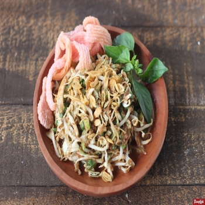

Gado-gado adalah salah satu makanan yang berasal dari Indonesia yang berupa sayur-sayuran yang direbus dan dicampur jadi satu, dengan bumbu kacang atau saus dari kacang tanah dan yang dihaluskan disertai
Rating : 9.9/10
Rarga : Rp.15000-45000
Ongkos kirim : Rp.5000
Pilihan pengiriman : gofood, grabfood
Pecel atau pecal merupakan makanan yang dikombinasikan dengan bumbu sambal kacang sebagai bahan utamanya dan dicampur dengan aneka jenis sayuran. Makanan ini populer terutama di wilayah DI Yogyakarta, Jawa Tengah, dan Jawa Timur. Asal nama dan asal daerah dari pecel belum diketahui secara pasti
Rating : 9.1/10
Rarga : Rp.16000-25000
Ongkos kirim : Rp.5000
Pilihan pengiriman : gofood, grabfood
Karedok atau keredok adalah salah satu makanan khas Sunda di Indonesia. Karedok dibuat dengan bahan-bahan sayuran mentah antara lain; mentimun, taoge, kol, kacang panjang, ubi, daun kemangi, dan terong
Rating : 8.1/10
Rarga : Rp.11000-23000
Ongkos kirim : Rp.5000
Pilihan pengiriman : gofood, grabfood